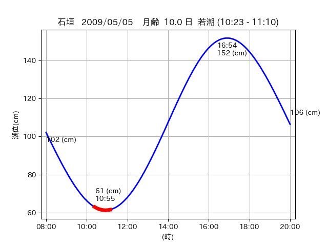
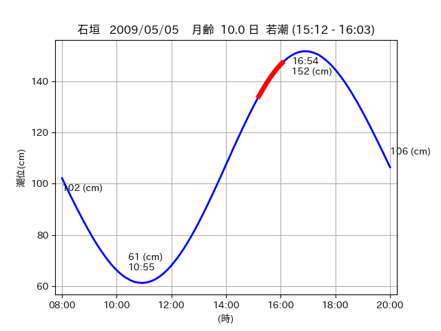

<!DOCTYPE html>
<html>
<head>
    
    <meta http-equiv="content-type" content="text/html; charset=UTF-8" />
    
        <script>
            L_NO_TOUCH = false;
            L_DISABLE_3D = false;
        </script>
    
    <style>html, body {width: 100%;height: 100%;margin: 0;padding: 0;}</style>
    <style>#map {position:absolute;top:0;bottom:0;right:0;left:0;}</style>
    <script src="https://cdn.jsdelivr.net/npm/leaflet@1.9.3/dist/leaflet.js"></script>
    <script src="https://code.jquery.com/jquery-3.7.1.min.js"></script>
    <script src="https://cdn.jsdelivr.net/npm/bootstrap@5.2.2/dist/js/bootstrap.bundle.min.js"></script>
    <script src="https://cdnjs.cloudflare.com/ajax/libs/Leaflet.awesome-markers/2.0.2/leaflet.awesome-markers.js"></script>
    <link rel="stylesheet" href="https://cdn.jsdelivr.net/npm/leaflet@1.9.3/dist/leaflet.css"/>
    <link rel="stylesheet" href="https://cdn.jsdelivr.net/npm/bootstrap@5.2.2/dist/css/bootstrap.min.css"/>
    <link rel="stylesheet" href="https://netdna.bootstrapcdn.com/bootstrap/3.0.0/css/bootstrap-glyphicons.css"/>
    <link rel="stylesheet" href="https://cdn.jsdelivr.net/npm/@fortawesome/fontawesome-free@6.2.0/css/all.min.css"/>
    <link rel="stylesheet" href="https://cdnjs.cloudflare.com/ajax/libs/Leaflet.awesome-markers/2.0.2/leaflet.awesome-markers.css"/>
    <link rel="stylesheet" href="https://cdn.jsdelivr.net/gh/python-visualization/folium/folium/templates/leaflet.awesome.rotate.min.css"/>
    
            <meta name="viewport" content="width=device-width,
                initial-scale=1.0, maximum-scale=1.0, user-scalable=no" />
            <style>
                #map_0c6d314ec0b4992173255d389fa717e0 {
                    position: relative;
                    width: 2048.0px;
                    height: 1600.0px;
                    left: 0.0%;
                    top: 0.0%;
                }
                .leaflet-container { font-size: 1rem; }
            </style>
        
</head>
<body>
    
    
            <div class="folium-map" id="map_0c6d314ec0b4992173255d389fa717e0" ></div>
        
</body>
<script>
    
    
            var map_0c6d314ec0b4992173255d389fa717e0 = L.map(
                "map_0c6d314ec0b4992173255d389fa717e0",
                {
                    center: [24.207, 123.927],
                    crs: L.CRS.EPSG3857,
                    ...{
  "zoom": 12,
  "zoomControl": true,
  "preferCanvas": false,
}

                }
            );

            

        
    
            var tile_layer_73ade1cfaf1fc619f81d7a7adac65cb5 = L.tileLayer(
                "https://cyberjapandata.gsi.go.jp/xyz/seamlessphoto/{z}/{x}/{y}.jpg",
                {
  "minZoom": 0,
  "maxZoom": 18,
  "maxNativeZoom": 18,
  "noWrap": false,
  "attribution": "\u5730\u7406\u9662\u5730\u56f3",
  "subdomains": "abc",
  "detectRetina": false,
  "tms": false,
  "opacity": 1,
}

            );
        
    
            tile_layer_73ade1cfaf1fc619f81d7a7adac65cb5.addTo(map_0c6d314ec0b4992173255d389fa717e0);
        
    
            var marker_16a66f668d330819f475134b6095453d = L.marker(
                [24.2784, 123.745],
                {
}
            ).addTo(map_0c6d314ec0b4992173255d389fa717e0);
        
    
            var icon_8790dd9c1658d5b35f1d4e68e01cc2f9 = L.AwesomeMarkers.icon(
                {
  "markerColor": "orange",
  "iconColor": "white",
  "icon": "info-sign",
  "prefix": "glyphicon",
  "extraClasses": "fa-rotate-0",
}
            );
        
    
        var popup_5e7f04356e0bef34fc4ad9d6d5c19be6 = L.popup({
  "maxWidth": "100%",
});

        
            
                var html_31159ac067c49b4a522942b2819b6d48 = $(`<div id="html_31159ac067c49b4a522942b2819b6d48" style="width: 100.0%; height: 100.0%;"><table><tr><td></td></tr><tr><td><center>20090505 No.1 </center></table></td></tr></table</div>`)[0];
                popup_5e7f04356e0bef34fc4ad9d6d5c19be6.setContent(html_31159ac067c49b4a522942b2819b6d48);
            
        

        marker_16a66f668d330819f475134b6095453d.bindPopup(popup_5e7f04356e0bef34fc4ad9d6d5c19be6)
        ;

        
    
    
                marker_16a66f668d330819f475134b6095453d.setIcon(icon_8790dd9c1658d5b35f1d4e68e01cc2f9);
            
    
            var poly_line_6c13bcbb8309ee15dde2b6f8349aaf89 = L.polyline(
                [[24.2784, 123.745], [24.2676, 123.7772]],
                {"bubblingMouseEvents": true, "color": "#00FFFF", "dashArray": null, "dashOffset": null, "fill": false, "fillColor": "#00FFFF", "fillOpacity": 0.2, "fillRule": "evenodd", "lineCap": "round", "lineJoin": "round", "noClip": false, "opacity": 1.0, "smoothFactor": 1.0, "stroke": true, "weight": 3}
            ).addTo(map_0c6d314ec0b4992173255d389fa717e0);
        
    
            var marker_a434e7e83088b85ebf7c75d60dc1c428 = L.marker(
                [24.2558, 123.8398],
                {
}
            ).addTo(map_0c6d314ec0b4992173255d389fa717e0);
        
    
            var icon_b26640a20fe8c2c16d4334ab5fd3de1b = L.AwesomeMarkers.icon(
                {
  "markerColor": "orange",
  "iconColor": "white",
  "icon": "info-sign",
  "prefix": "glyphicon",
  "extraClasses": "fa-rotate-0",
}
            );
        
    
        var popup_63a197ecdea2b9a837051eddcaf86b84 = L.popup({
  "maxWidth": "100%",
});

        
            
                var html_40be0d29033f3d510a9f6b08a5925d97 = $(`<div id="html_40be0d29033f3d510a9f6b08a5925d97" style="width: 100.0%; height: 100.0%;"><table><tr><td></td></tr><tr><td><center>20090505 No.2 </center></table></td></tr></table</div>`)[0];
                popup_63a197ecdea2b9a837051eddcaf86b84.setContent(html_40be0d29033f3d510a9f6b08a5925d97);
            
        

        marker_a434e7e83088b85ebf7c75d60dc1c428.bindPopup(popup_63a197ecdea2b9a837051eddcaf86b84)
        ;

        
    
    
                marker_a434e7e83088b85ebf7c75d60dc1c428.setIcon(icon_b26640a20fe8c2c16d4334ab5fd3de1b);
            
    
            var poly_line_2efd1bb5a9491732b537d4a88fa1329a = L.polyline(
                [[24.2558, 123.8398], [24.2472, 123.8522]],
                {"bubblingMouseEvents": true, "color": "#00FFFF", "dashArray": null, "dashOffset": null, "fill": false, "fillColor": "#00FFFF", "fillOpacity": 0.2, "fillRule": "evenodd", "lineCap": "round", "lineJoin": "round", "noClip": false, "opacity": 1.0, "smoothFactor": 1.0, "stroke": true, "weight": 3}
            ).addTo(map_0c6d314ec0b4992173255d389fa717e0);
        
    
            var marker_2e6444af0fe54cc46b5067c6b62fa07e = L.marker(
                [24.2052, 123.9297],
                {
}
            ).addTo(map_0c6d314ec0b4992173255d389fa717e0);
        
    
            var icon_42d96234c58fd8fbb21085e902c37084 = L.AwesomeMarkers.icon(
                {
  "markerColor": "orange",
  "iconColor": "white",
  "icon": "info-sign",
  "prefix": "glyphicon",
  "extraClasses": "fa-rotate-0",
}
            );
        
    
        var popup_a36383fa0857a325c516b931262f7bdc = L.popup({
  "maxWidth": "100%",
});

        
            
                var html_b45d11c3200b52852f443259a711baf7 = $(`<div id="html_b45d11c3200b52852f443259a711baf7" style="width: 100.0%; height: 100.0%;"><table><tr><td></td></tr><tr><td><center>20090505 No.3 </center></table></td></tr></table</div>`)[0];
                popup_a36383fa0857a325c516b931262f7bdc.setContent(html_b45d11c3200b52852f443259a711baf7);
            
        

        marker_2e6444af0fe54cc46b5067c6b62fa07e.bindPopup(popup_a36383fa0857a325c516b931262f7bdc)
        ;

        
    
    
                marker_2e6444af0fe54cc46b5067c6b62fa07e.setIcon(icon_42d96234c58fd8fbb21085e902c37084);
            
    
            var poly_line_70df62800e90bd32bfa47bb1a921f5a8 = L.polyline(
                [[24.2052, 123.9297], [24.2081, 123.9235]],
                {"bubblingMouseEvents": true, "color": "#FF00FF", "dashArray": null, "dashOffset": null, "fill": false, "fillColor": "#FF00FF", "fillOpacity": 0.2, "fillRule": "evenodd", "lineCap": "round", "lineJoin": "round", "noClip": false, "opacity": 1.0, "smoothFactor": 1.0, "stroke": true, "weight": 3}
            ).addTo(map_0c6d314ec0b4992173255d389fa717e0);
        
</script>
</html>